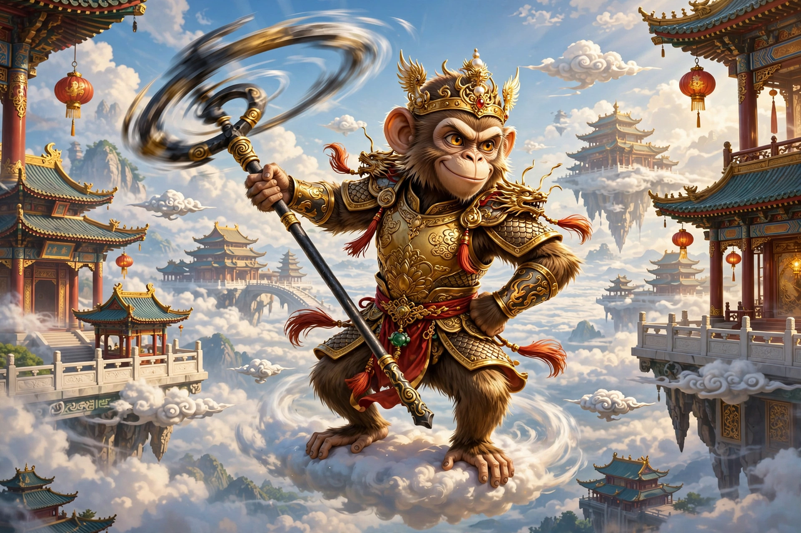

From Wikipedia, the free encyclopedia
| Sun Wukong | |
|---|---|
| Affiliation | Chinese mythology and literature; the Monkey King |
| Source | Journey to the West (16th century, attrib. Wu Cheng'en) |
| Titles | Great Sage Equal to Heaven; Victorious Fighting Buddha |
| Powers | 72 transformations; cloud-somersault; the compliant golden-banded staff (Ruyi Jingu Bang); fiery golden eyes |
| Master | The monk Tang Sanzang (Xuanzang) |

Sun Wukong, the Monkey King, is the most famous character of Chinese literature: the stone-born monkey who rebelled against heaven, was imprisoned under a mountain for five hundred years, and won redemption escorting the monk Tang Sanzang to India in the 16th-century novel Journey to the West. Trickster, brawler, jester and saint in one, he combines the irreverence of the folk trickster (see Coyote and Anansi) with a pilgrim's progress, and his image — golden staff, tiger-skin skirt, phoenix-feather cap — is known to every child in East Asia.
Born from a magic stone on the Mountain of Flowers and Fruit, Wukong learned the 72 transformations and the cloud-somersault from the patriarch Subhuti, bullied the Dragon King into giving him the great iron staff that can shrink to a needle, and erased his name from the registers of death. Heaven tried to buy him off with office — Keeper of the Heavenly Stables, an insult he repaid by proclaiming himself Great Sage Equal to Heaven — and when flattery failed, war: he defeated heaven's armies, stole Laozi's elixir and the peaches of immortality, and was captured only when Laozi's diamond snare and heaven's full might combined. The furnace meant to execute him instead gave him fiery golden eyes. At last the Buddha himself came: wagering that Wukong could not somersault out of his palm, he won, and sealed the monkey beneath the Five Phases Mountain.
Freed by Tang Sanzang — and bound to obedience by Guanyin's golden headband, which tightens unbearably when the monk recites its spell — Wukong becomes the pilgrim party's engine: fighting demons with staff, wit and borrowed heavenly help, quarrelling with his master, storming off and returning, across 81 ordeals. His growth from rebel to protector is the novel's heart; at journey's end he is made a Buddha, the Victorious Fighting Buddha, the headband vanishing because the discipline it enforced has become his nature.
Wukong saturates East Asian culture — operas, temples (he is worshipped as a god in Taiwan and Southeast Asia), cartoons, and global hits from Dragon Ball (whose Goku is his descendant) to the 2024 game Black Myth: Wukong. Mao quoted him as a model of daring ("the golden monkey wrathfully brandishes his cudgel"), revolutionaries and satirists claim him, and scholars read him as the mind's monkey: restless, brilliant, and only heaven-proof when it serves something beyond itself.
Jade Emperor · Guanyin · Taoism · Buddhism · Coyote